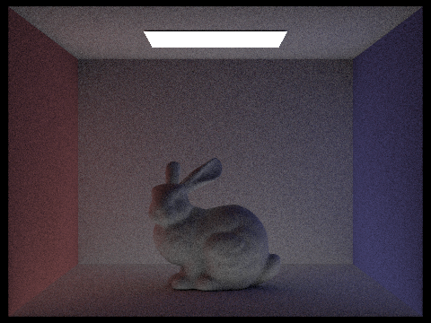

CS184/284A Spring 2025 Homework 3 Write-Up
Link to webpage: https://cal-cs184.github.io/hw-webpages-su25-ryanlee4761/hw3/index.html
Link to GitHub repository: https://github.com/cal-cs184/hw-webpages-su25-ryanlee4761

Overview
In this assignment, I got to build all the fundamental components for rendering. This involved ray generation, optimizing intersection detections, and implementing various functions for ray tracing and optimizations. These functions all come together to produce something that is capable of realistically displaying 3D models with various light sources by simulating the natural phenonmenons of lights and reflections. Doing this assignment allowed to me to think more about how I perceive this world and what goes into the light that ends up entering my eyes. Being able to simulate this with a computer in a virtual world and producing realistic images is extremely impressive to me, despite how tedious it has been to implement everything.
Part 1: Ray Generation and Scene Intersection
To implement ray generation, I translated the given normalized coordinates to a camera space ray using the tangents of the hFov/vFov, and adjusted them with c2w to match the world space. After that, the world ray was just setting the origin, using the adjusted ray as the direction, and setting the clipping planes.
In the rendering pipeline, ray generation is used to determine whether a pixel should be lit up, or how bright it should be. For a given pixel, random rays are generated throughout its area, and the results are accumulated to determine the pixel’s final value. To determine the ray’s color, we must check to see if the ray intersects another object, like a triangle or sphere, and use that color if so, otherwise we use some default color based on the camera ray.
To determine triangle intersection, I used the Moller Trumbore algorithm. The naive method would have been to find the plane the triangle is in, and use the normal to determine when the ray intersects before checking if it passes through the triangle. With Mollor Trumbore, we can do the same thing with fewer calculations. We can find two vectors of the triangle, and then use that and the parameters of the ray and triangle to determine the barycentric coordinates of the ray’s intersection with the triangle and the t value. We can use the barycentric coordinates to check if the ray does pass through the triangle, and use the calculated t value to ensure its within our viewing plane.
|
|

|
Part 2: Bounding Volume Hierarchy
To construct the BVH, at any given level, I counted the available bbox’s to determine whether or not I was at a leaf node. If I was at a leaf node, I would use the given start and end of the list for these elements and save these pointers in the BVHNode to return. If the node had more elements than what could fit into a leaf, I calculated the average position of the centroids, and determined which axis they were the most spread out on. I used this axis to split the elements into two groups split by the average centroid location on that axis which I thought would be a good approximation/method to split up the elements. To execute this, I used std::partition as a C++ function to help do this in place so we could use the same list for each recursive level. I then called construct_bvh on each partition to recursively construct within each subsection and create the binary tree shaped BVH.
The BVH acceleration greatly benefits rendering times compared to the naive rendering. On my laptop, the BVH acceleration allowed for these moderately complex files to render within a few seconds while the non-accelerated code took on the order of 10s of seconds to complete. The BVH hierarchy allows for very efficient searching for intersections which explains and is consistent with my empirical findings.
|
|
|
|
|
|
Part 3: Direct Illumination
The first part of the direct lighting function was with uniform hemisphere lighting which was useful for large lights. For any given pixel, we could test any angle and check to see if there was a light source illuminating itself, and accumulate these results to portray the light on that pixel. For each sample, I determined a random incoming angle and detected whether the corresponding ray directly intersected with a light source. If it did, I calculated the BSDF, luminance, cosine, and probability given the outgoing/incoming angles and relevant rays. I accumulated these into a single value which I scaled by the probability of each sample and the total number of samples taken to determine the final lighting value of the pixel.
The second part of the direct lighting function was from point lighting. The purpose of this was to reduce noise and
ensure that each light was contributing to any given pixel by individually testing their intersections. The
implementation of this was very similar to the previous function. However, instead of looping through a number of
samples, I was looping through each light in a scene. For each of these lights, I used sample_L to
determine the distance between the pixel and light, and performed both a cosine/angle test as well as an intersection
test similar to the previous function. If either of these failed, I would not calculate the lighting from the point
light since it was guaranteed to not be directly in contact. If it did pass these tests, I calculated the luminance in
the same fashion as I did for the previous part.
|
|
|
The uniform hemisphere sampling is much better for general lighting applications. By design, its randomness allows for it to cover more possible rays and simulate the general spread of light in a scene. However, the lighting sampling is quite effective with more rays, although the noise is quite obvious at all levels. Although the image is barely visible with 1 ray, 64 rays allows for a nearly clear picture to be shown. In conjunction though, the lighting sampling can help reduce the noise that is present in the uniform hemisphere sampling by smoothing out the light values along a surface.
|
|
|
|
|
|
Part 4: Global Illumination
To implement the indirect lighting function, I had to change how the lights were accumulated into the final L_out by ensuring that we only did the recursive calls if the depth of the ray was greater than 1, meaning we could recurse, and that the pixel had an intersection we could recursively bounce from. I also moved the one_bounce_radiance call into the at_least_one_bounce_radiance call so that I could recursively accumulate all indirect lighting. Just like in task 3, I got a random incident ray and calculated the relevant intersection. However, I also tracked the depth of the recursion by saving it in the rays that were created, and each recursive call decreased the depth of the ray and returned the lighting from calculating the radiance of those new rays. With Russian Roulette global illumination, I only did this recursive call based on some coin flip as well. I finally scaled these recursive calls, scaled them, and accumulated and returned the total L_out.
|
|
|
|
|

|
Unfortunately the rest of the writeup could not be completed in time with the slip days. Who knew that procrastination would end like this, or that not fully realizing that the course staff really did mean that the rendering would take a long time to complete!? crazy amirite!? (/s)
Todo: render direct/indirect scenes with full samples/pixel, fix accumulation and render each mth bounce, output russian rouletter rendering, and compare rendered views with various samples/pixel
Part 5: Adaptive Sampling
WIP unfortunately
(Optional) Part 6: Extra Credit Opportunities
Not attempted unfortunately
AI Acknowledgement
Generative AI was lightly used for the completion of this assignment. The main use of the AI was to help debug instances where the bugs were unclear and to help rectify coding errors. For example, the use of "partition" to split the BVH tree was taken from advice given by ChatGPT. Generative AI was also used to describe the purpose or over-arching idea of some functions and math. For example, ChatGPT was used to explain the reflection equation and what each function and parameter corresponded to.